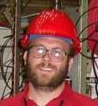

Brad Wogsland's Physics

Department of Physics & Astronomy
401 Nielsen Physics Building
Knoxville, TN 37996
Telephone: (865)-974-7821
E-mail: bradley@wogsland.org
High Energy Physics
I am currently working with the BaBar Collaboration at SLAC to gain a mastery of meson spectroscopy and a better understanding of Quantum Chromodynamics (QCD) and it's limitations. Specifically, I am interested in charmonium spectroscopy and the new meson states. I have worked as a comissioner on BaBar's DIRC, assisted in the installation of BaBar's LST upgrade, and studied a prototype of the next generation DIRC at SLAC. That's alot already, but the mind will wonder...
Wee Vita:
Bradley Wogsland earned a B.S. in Physics and a B.S. in Applied Mathematics from the Georgia Institute of Technology in 2002. He received an M.S. in Physics from the University of Tennessee in 2006 under the advisement of Ted Barnes and Stefan Spanier.
Full Version
Recent Talks:
DOE Presentation 2007 - Physicists require funding and the DOE provides it. Currently, the DOE funds my work at BaBar, so I must report on how I have used their money to further our understanding of physics. (given 23 January 2007 via video feed to DOE representative Randy Johnson)
I also produced a video version which it was decided not to use:
Part 1
Part 2.
Cherenkov Detectors in Particle Physics - Traces the history of Cherenkov detectors from the first ideas of Seguinot and Ypsilantis to RICH detector to the CRID to ACCs to the DIRC to prototypes of future detectors. Special emphasis is given to the DIRC detector at BaBar, with which the presenter has personal experience. (given to the Spaniergruppe at UT August 2006).
Black Holes at the LHC - if there are "large" extra dimensions beyond our 4-dimensional spacetime, then these have the possiblity of changing the Planck mass, the scale at which gravity is of the same strength as the electroweak force. If the Planck mass is of the order 1 TeV, then the LHC will be a copious Black Hole producer. (given 20 October 2004 to the UT Particle Physics Seminar).
A more complete listing can be found here.
Writings:
Publications List on SPIRES
An Analysis of Charmonia with BaBar (Comprehensive Exam)
Subject Pages:
Chaos
Condensed Matter
Econophysics
Electromagnetism
High Energy Physics
Quantum Mechanics
Space
General Sites:
Physics Acronyms & Such - a short list I've compiled
e-Print Archive - the most important website in all of physics, period.
Fundamental Constants - most recent values and uncertainies from NIST
Isotope Table - data from LBNL
Physics Flash Animations by Harrison, many of them interactive
Physics Animations by Gallis
Physicsweb.org
The Crackpot Index - I scored a 52, mostly on account of egotism.
Physics Formulary - a nice studyguide/reference.
Hyperphysics - a GSU site with the basics on most topics.
comPADRE
Societies:
American Institute of Physics
The American Physical Society
The American Association for the Advancement of Science
Return to the top,
visit my personal homepage,
or that of the
HEP group at UT